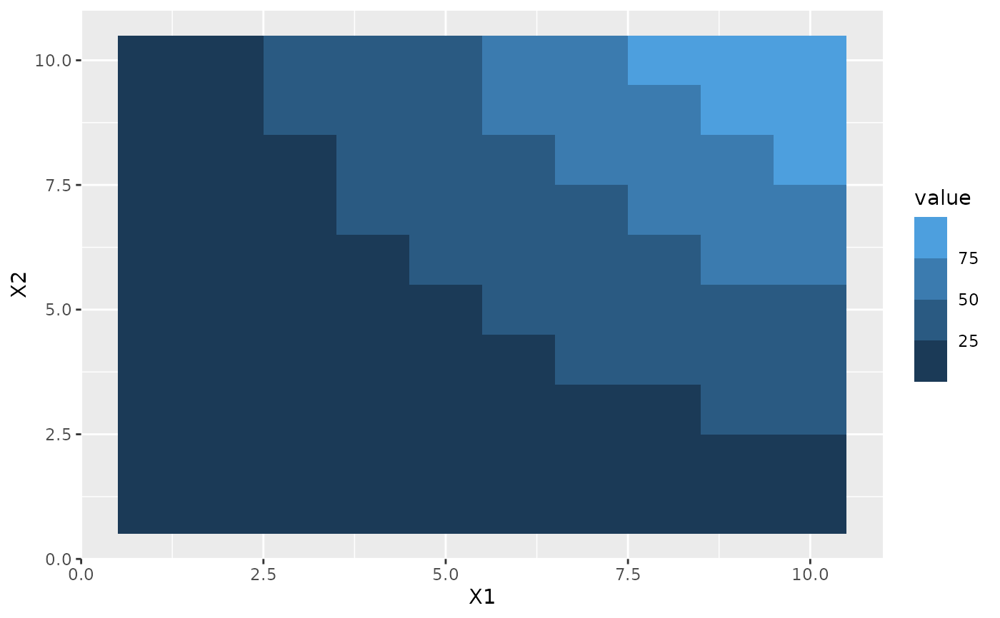
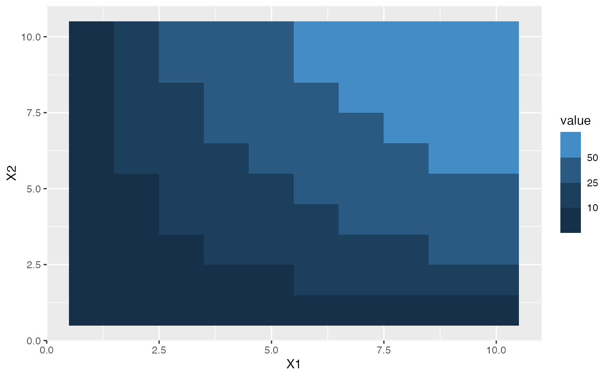
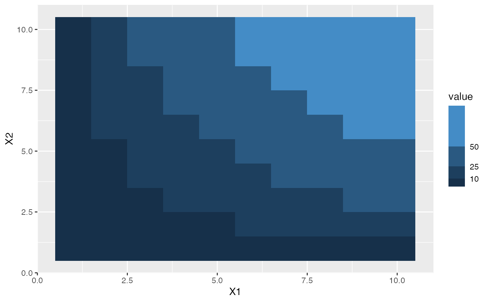
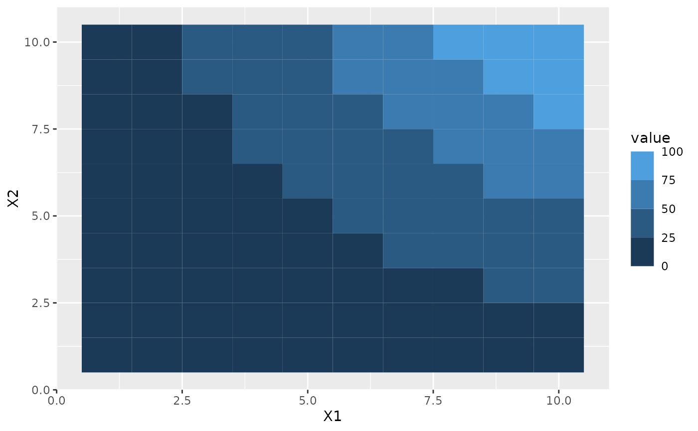
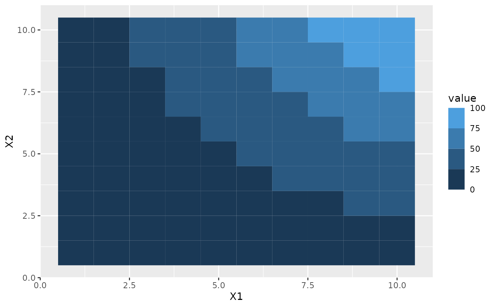

This guide is version of guide_colourbar() for binned colour and fill
scales. It shows areas between breaks as a single constant colour instead of
the gradient known from the colourbar counterpart.
Usage
guide_coloursteps(even.steps = TRUE, show.limits = NULL, ticks = FALSE, ...)
guide_colorsteps(even.steps = TRUE, show.limits = NULL, ticks = FALSE, ...)Arguments
- even.steps
Should the rendered size of the bins be equal, or should they be proportional to their length in the data space? Defaults to
TRUE- show.limits
Logical. Should the limits of the scale be shown with labels and ticks. Default is
NULLmeaning it will take the value from the scale. This argument is ignored iflabelsis given as a vector of values. If one or both of the limits is also given inbreaksit will be shown irrespective of the value ofshow.limits.- ticks
A logical specifying if tick marks on the colourbar should be visible.
- ...
Arguments passed on to
guide_colourbarbarwidthA numeric or a
grid::unit()object specifying the width of the colourbar. Default value islegend.key.widthorlegend.key.sizeintheme()or theme.barheightA numeric or a
grid::unit()object specifying the height of the colourbar. Default value islegend.key.heightorlegend.key.sizeintheme()or theme.frame.colourA string specifying the colour of the frame drawn around the bar. If
NULL(the default), no frame is drawn.frame.linewidthA numeric specifying the width of the frame drawn around the bar in millimetres.
frame.linetypeA numeric specifying the linetype of the frame drawn around the bar.
ticks.colourA string specifying the colour of the tick marks.
ticks.linewidthA numeric specifying the width of the tick marks in millimetres.
draw.ulimA logical specifying if the upper limit tick marks should be visible.
draw.llimA logical specifying if the lower limit tick marks should be visible.
directionA character string indicating the direction of the guide. One of "horizontal" or "vertical."
default.unitA character string indicating
grid::unit()forbarwidthandbarheight.reverselogical. If
TRUEthe colourbar is reversed. By default, the highest value is on the top and the lowest value is on the bottomtitleA character string or expression indicating a title of guide. If
NULL, the title is not shown. By default (waiver()), the name of the scale object or the name specified inlabs()is used for the title.title.positionA character string indicating the position of a title. One of "top" (default for a vertical guide), "bottom", "left" (default for a horizontal guide), or "right."
title.themeA theme object for rendering the title text. Usually the object of
element_text()is expected. By default, the theme is specified bylegend.titleintheme()or theme.title.hjustA number specifying horizontal justification of the title text.
title.vjustA number specifying vertical justification of the title text.
labellogical. If
TRUEthen the labels are drawn. IfFALSEthen the labels are invisible.label.positionA character string indicating the position of a label. One of "top", "bottom" (default for horizontal guide), "left", or "right" (default for vertical guide).
label.themeA theme object for rendering the label text. Usually the object of
element_text()is expected. By default, the theme is specified bylegend.textintheme().label.hjustA numeric specifying horizontal justification of the label text. The default for standard text is 0 (left-aligned) and 1 (right-aligned) for expressions.
label.vjustA numeric specifying vertical justification of the label text.
orderpositive integer less than 99 that specifies the order of this guide among multiple guides. This controls the order in which multiple guides are displayed, not the contents of the guide itself. If 0 (default), the order is determined by a secret algorithm.
Use with discrete scale
This guide is intended to show binned data and work together with ggplot2's
binning scales. However, it is sometimes desirable to perform the binning in
a separate step, either as part of a stat (e.g. stat_contour_filled()) or
prior to the visualisation. If you want to use this guide for discrete data
the levels must follow the naming scheme implemented by base::cut(). This
means that a bin must be encoded as "(<lower>, <upper>]" with <lower>
giving the lower bound of the bin and <upper> giving the upper bound
("[<lower>, <upper>)" is also accepted). If you use base::cut() to
perform the binning everything should work as expected, if not, some recoding
may be needed.
See also
Other guides:
guide_bins(),
guide_colourbar(),
guide_legend(),
guides()
Examples
df <- expand.grid(X1 = 1:10, X2 = 1:10)
df$value <- df$X1 * df$X2
p <- ggplot(df, aes(X1, X2)) + geom_tile(aes(fill = value))
# Coloursteps guide is the default for binned colour scales
p + scale_fill_binned()

# By default each bin in the guide is the same size irrespectively of how
# their sizes relate in data space
p + scale_fill_binned(breaks = c(10, 25, 50))

# This can be changed with the `even.steps` argument
p + scale_fill_binned(
breaks = c(10, 25, 50),
guide = guide_coloursteps(even.steps = FALSE)
)

# By default the limits is not shown, but this can be changed
p + scale_fill_binned(guide = guide_coloursteps(show.limits = TRUE))

# (can also be set in the scale)
p + scale_fill_binned(show.limits = TRUE)
